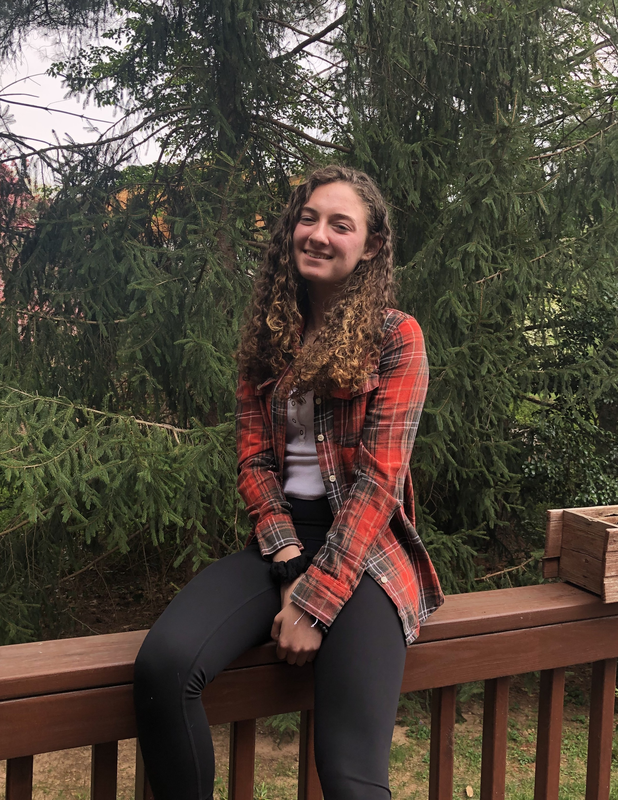

Hello and welcome!
Francesca Delmolino
I’m a data scientist, web developer and sustainability ambassador
Senior Data Analyst at Capital One, living in Philadelphia. I build data pipelines and dashboards, care about ethical data, sustainable innovation and mapping with GIS, and want AI to make the world better.

Hi! I’m Francesca.
I’m a passionate learner based in Philadelphia, and a graduate of the University of Michigan, where I studied Data Science with a minor in Earth Sciences. Go Blue!
I like questions where numbers meet the natural world: how to model weather, monitoring changes in our environment, and how we can architect technology that can leave a lighter footprint. For sustainability work, I especially enjoy mapping, geospatial analysis in GIS, and modeling.
When I’m not coding or learning something new, you’ll find me tending my Stardew Valley farm, listening to The Magnus Archives, or reading horror, thrillers and mysteries.
- Senior Data AnalystCapital One, since January 2026
- B.S. Data Science, Earth Sciences minorUniversity of Michigan, GPA 3.79
- Philadelphia, PANew home base
Experience
Where I’ve worked and taught, newest first. Select a role to see what I did.
University of Michigan, Ann Arbor
B.S. Data Science, minor in Earth Sciences. May 2024, GPA 3.79.
- University Honors (Dean’s List)
- James B. Angell Scholar
- Undergraduate Underclassmen Honors College, 2020 to 2022
Relevant coursework
Languages
English (native), French (proficient)
Portfolio
Projects I’ve built. Pick a category to narrow them down.
Travel log
The places I’ve called home so far.
Staying green
Four ideas that guide how I work and travel.
Measure first
Good decisions about the planet start with honest data.
Build light
Fast, simple pages use less energy. This site has no framework and no heavy images.
Map it
GIS and geospatial modeling show where problems and solutions really are on the ground.
Travel thoughtfully
Don't over-plan, visit local places, and appreciate the experience.
Places I’ve been
Hover over, tap, or tab to any country to see its name. The countries I’ve visited are in red.
Loading the map…